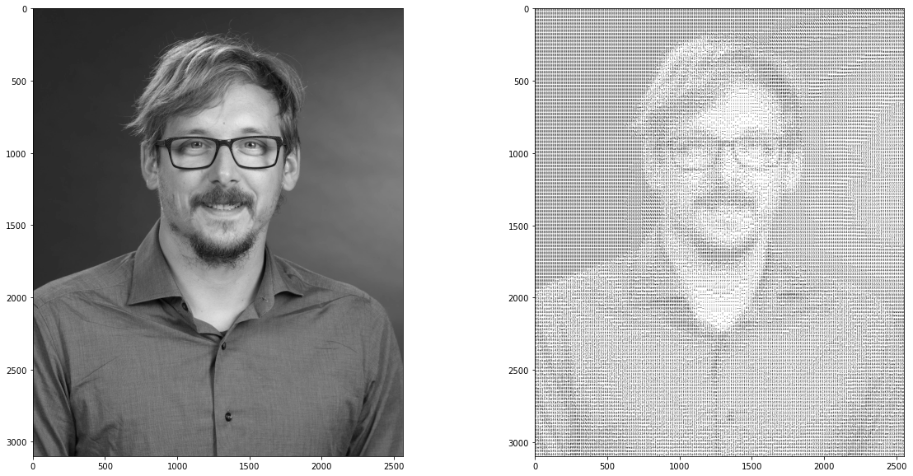

due Friday October 22, at 11:59 PM
In this project we will render an image using characters.
Note this is a short project which will consist of code only. No text/narrative is necessary for this project.
The project will be graded following this rubric
Category |
percentage |
|---|---|
Code correctness and |
70% |
completeness |
|
Report organization |
30% |
(includes code comments) |
Import all characters and generate an image for each character. We will use the module string for a string of all printable characters.
[1]:
import string
string.printable
[1]:
'0123456789abcdefghijklmnopqrstuvwxyzABCDEFGHIJKLMNOPQRSTUVWXYZ!"#$%&\'()*+,-./:;<=>?@[\\]^_`{|}~ \t\n\r\x0b\x0c'
Note: we are going to discard the last 5 characters (tab, newline, carriage return, …)
[2]:
list_of_characters = string.printable[:-5]
list_of_characters
[2]:
'0123456789abcdefghijklmnopqrstuvwxyzABCDEFGHIJKLMNOPQRSTUVWXYZ!"#$%&\'()*+,-./:;<=>?@[\\]^_`{|}~ '
The function char2array given a character char, returns an array representation of the character and the shape of the array returned
Note: the function utilizes the cv2 module to resize the image. You will need to install the module running
!pip install opencv-python
in a code cell of jupyter notebook.
You need to run the command once (so please do not put the install command in the project notebook)
[3]:
import io
import cv2
def char2array(char,width=15,height=24):
# given a character, it will return a (height x width) numpy array
# containing the character as an image (in grayscale)
plt.figure(figsize=(4,4))
plt.axis("equal") # same scale for axis
plt.axis('off') # remove axis
plt.text(0,0,char, # print character in image
ha='center',va='center',
fontfamily='monospace',size=280, color='k')
with io.BytesIO() as buff: # save image in memory
plt.savefig(buff,bbox_inches='tight',format='png',
#pad_inches=0.1,
dpi=8)
buff.seek(0)
img=plt.imread(buff)
plt.close() # close image
output=cv2.resize(img,(width,height),interpolation=cv2.INTER_NEAREST) # resize image
return output, output.shape
Example
[4]:
import matplotlib.pyplot as plt
At,s=char2array('@')
print(s) # array shape
plt.imshow(At)
plt.show()
(24, 15, 4)
Note You should also compute the average color value for each character (in gray scale); it will come handy for part 3 of the project.
Choose an image, import it in the notebook and change to gray scale
Here we substitute the letters in the image. We will replace patches of the image with the letter that has a similar color value as the image.
The final result should look like this
Note The image you characterize, should have a large number of pixels (>2000) in each dimension to ensure a good approximation with characters.
Look at the example below using this Halloween themed image
This is the characterization with the original image
Whereas here is the characterization of the same image rescaled by a factor of 3
You can resize an image using the following code from the cv2 module. The variable factor will set the scaling factor. For example factor=3 will increase the image dimensions threefold.
[ ]:
img=plt.imread(image_name) # image
width = int(img.shape[1] * factor )
height = int(img.shape[0] * factor )
dim = (width, height)
# resize image
img_resized = cv2.resize(img, dim, interpolation = cv2.INTER_AREA)
Create a function called char_me that returns a characterized image
Characterize at least one of the images given above
Take a picture of yourself and characterize it
Hint/Note when you characterize the image you might notice that it is very dark, and there are little details. You should rescale your characters color value to cover a broader spectrum, and have a more clear output image.